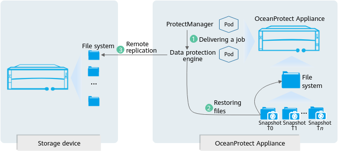
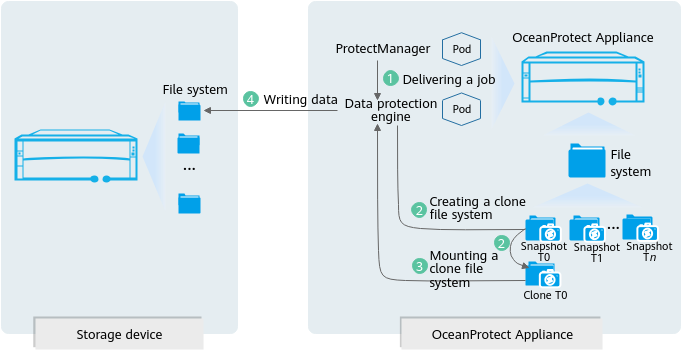

Restoration can be used if data of a NAS file system or NAS share is lost or you need to restore data of a copy to another NAS file system or NAS share.
Restoration Service Process
Restoring a file system to its original location
Figure 1 Restoration service flow (restoring a file system to its original location) 
OceanProtect is used to deliver and schedule a NAS file backup copy restoration job and send the job to the data protection engine.
The ProtectAgent locates the target copy in the file system and restores the copy data to the file system.
The ProtectAgent uses remote replication to synchronize data in the file system to the original location for data restoration.
Other restoration modes
Figure 2 Restoration service flow (other restoration modes) 
OceanProtect is used to deliver and schedule a NAS file backup copy restoration job and send the job to the data protection engine.
The data protection engine creates a clone file system based on the restoration target copy.
The protection engine mounts the clone file system in the OceanProtect OS and reads the files to be restored using the NFS or CIFS protocol.
The protection engine mounts the file system to be restored using the NFS or CIFS protocol, writes data to the target file system to be restored, and deletes the clone file system.